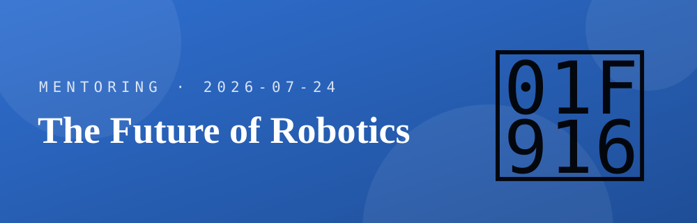
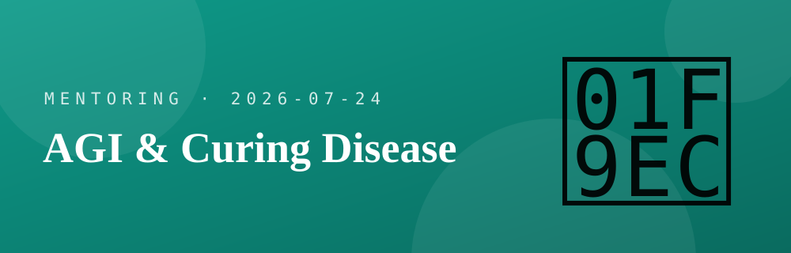
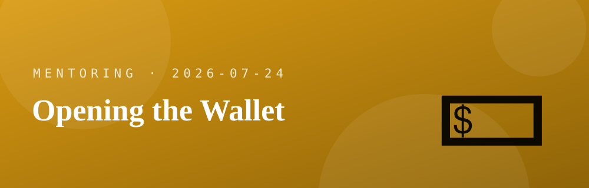
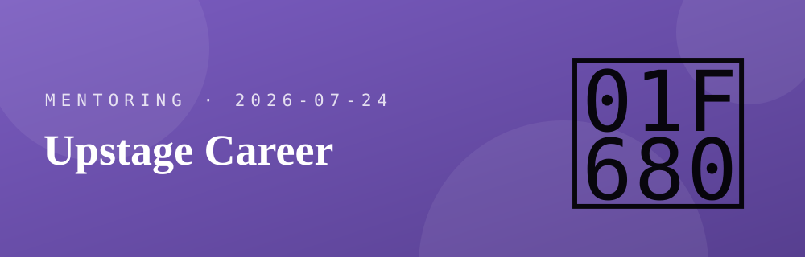
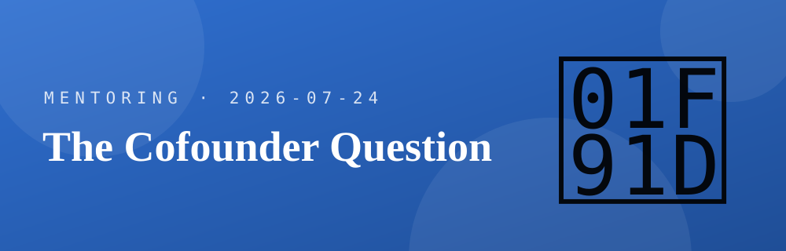

Mentoring talking points
Eight topics to raise. Each card has a cross-verified summary + sources (URL) + questions for the mentor. Badges show what checked out — Verified Contested Caution. Drag the list to reorder by priority.
Secret circles & power — the 'Dialog' leak
Where does real power sit now — Washington, or Silicon Valley?
Real event In June 2026 a Swiss hacker (maia arson crimew) pulled 222 registrants from the insecurely-exposed website of 'Dialog', a private, invite-only group co-founded in 2006 by Peter Thiel and Auren Hoffman. Wired broke it; major outlets confirmed.
Registrants included US Treasury Sec. Scott Bessent, Senators Ted Cruz & Cory Booker, Elon Musk, Eric Schmidt, Google/DeepMind execs, a NATO commander, and Israel's Finance Ministry chief economist. Members were tiered A/B/C (the 'C' tier may be the top). Session titles for the Aug 2026 Ireland retreat included "Navigating WWIII" and "Technology for the Battlefield."
Caution It was an exposed website, not a dramatic hack, and registration ≠ attendance. "Power is moving from DC to Silicon Valley" is a contested reading — the state still holds law, force, and the contracts (Palantir's growth is itself government-dependent).
- If power really is concentrating in a few tech-and-capital rooms, what can people like us actually do about it — build something, get near it, route around it, or just make peace with it?
- Where's the leverage for an outsider — is it trying to get into those rooms, or building something they eventually can't ignore? I want to think this through with you.
- When you look at where this is all heading, what would you tell someone at my stage to do now so we're not just spectators to it?
The future of robotics — "the data is the product"
Is the moat the hardware, or the data ecosystem that trains it?

Self-reported Xiaomi says its factory humanoid raised nut-fastening success 90.2% → 98% (~4 months), hit ~90% on console-panel sorting and parts-bin folding, and handled flexible / deformable parts continuously for hours — all Xiaomi's own numbers, no independent audit. Cite as "Xiaomi reports."
The thesis: the robot isn't the product; the data flywheel (using your own factory as an RL testbed) is the moat. But "data = moat" and "data = bottleneck" are two sides of one coin — real-world data can't be scraped, it's generated task-by-task. China's price collapse (Unitree R1 ~$4,900) pushes the contest to software / foundation models.
Counter-view: "the wall of physics" Actuator non-linearity, contact/slip, hardware marginal cost, and long-tail edge cases aren't solved by data-scaling alone. Moravec's paradox: intelligence tests are easy; a one-year-old's perception & movement are the hard part.
- I keep telling myself robotics is where I should go, but part of me thinks a software guy with no factory is kidding himself. You've built real things — am I wrong to chase this?
- If you were me — no hardware background, no capital — where would you actually plant your feet here so you're not roadkill?
- I'd rather hear it straight: is "the data is the moat" a real opening for me, or just a story we software people tell ourselves?
AGI & curing disease — real, or hype?
Kurzweil's 2029 AGI / 2032 longevity escape — is any of it real?

Predictions, not facts Kurzweil's actual forecasts: 2029 AGI · 2032 Longevity Escape Velocity · 2045 Singularity (his 2024 book). These are predictions, not settled science.
Real progress AlphaFold 3 (DeepMind/Isomorphic, Nature 2024) predicts protein–DNA–ligand interactions; AlphaFold won the 2024 Nobel Prize in Chemistry — but it's a research accelerator, not a "cure."
Brakes on the curve The data wall (quality human data exhausting ~2026–2032, Epoch AI), model collapse (recursive training on AI-generated data degrades models, Nature 2024), the energy bottleneck (IEA: data-center power ~950 TWh by 2030), and LeCun's view that autoregressive LLMs aren't the path to AGI (opinion, contested).
- Everyone around me talks like AGI changes everything, and I honestly can't tell if I'm behind or if it's hype. From where you sit — is it real this time, or another cycle?
- I'm quietly scared of betting my next ten years on something that stalls. If a winter comes, where would you make sure you're standing?
- This might sound odd, but if people really start living much longer, my whole FIRE plan feels naive. How would you think about it if you were me?
- If AGI really lands around 2029 — I know I still need to focus on my career right now — but with your years behind you, how would you tell someone at my age and stage to actually position for it, not just brace for it?
America's pragmatism — is it a real thing?
In the US, do you sell on utility, durability & intuitiveness over looks?
Well-grounded Low-context (US) vs high-context (Korea) — Edward Hall: an immigrant society needs explicit messages, so intuitive, no-manual UX is essential. Sign value (Baudrillard): Koreans consume status/aesthetics, so looks matter more. American pragmatism (James/Dewey): what works is true → durability & intuitiveness are themselves the aesthetic.
But — the twist (weight ~40%) "If it's useful, ugly is fine" is a trap. US premium leaders (Apple, Stripe, Notion) prove "minimalism that hides complexity" is itself the premium. Utility is the engine; a crude shell is not OK.
Everyday evidence Seattle's Sign Code (zoning) keeps signage minimal; instead of signs, businesses win customers via Google Maps/Yelp local SEO, USPS EDDM, Nextdoor; fewer parking-lot warning devices, but pedestrian right-of-way + premises liability (lawsuits) make drivers cautious.
- You've actually sold here and you get the Korean side too — what did you have to unlearn from Korea to make something land in the US?
- Give me the honest one: what's the mistake Koreans keep making here that they can't see in themselves? I'd rather know now than learn it the hard way.
- I still think with Korean instincts. If you were coaching me, how would you retrain my sense for what Americans actually value?
Pragmatism, part 2 — how you actually open a wallet
The under-appreciated US skill I don't have: getting people to pay.

The mechanic that matters most Americans buy when the downside of buying is removed, not when the pitch is loudest. Risk reversal — money-back guarantee, free trial, easy returns, warranty — transfers the transaction risk from buyer to seller and reads as a quality signal (a bad seller couldn't afford it). Stack Cialdini's levers on top: social proof, scarcity, authority, reciprocity.
Pricing is psychology, and it's tested Anchoring (a high reference price makes the target look cheap), the decoy effect — Ariely's Economist test swung the combo from 32% → 84% by adding a dominated option — and charm pricing ($29.99 reads as "twenty-something"). These are replicated experiments, not marketing folklore. And sell the job (JTBD), not the feature list.
But — the engineer's trap "Benefits, not features" has limits: once the outcome is clear, technical buyers do want the spec sheet. And US B2B is a committee sport that's mostly self-directed — Gartner: buyers spend only ~17% of the journey with any one rep, and 77% call the purchase "complex/difficult." Your docs, free tier and case studies sell before a human does.
- You've actually gotten Americans to pay. In the moment someone decides to open their wallet here — what's really tipping them? I want the lived version, not the textbook one.
- I'm an engineer, so my reflex is to show the spec sheet. Where does that reflex help me close, and where is it quietly killing the sale?
- If there's one thing about pricing or risk-reversal that Koreans keep getting wrong in the US, and can't see in themselves — I'd rather you just tell me now.
Upstage career — funding, IPO, US team
I'm joining Upstage, maybe working with the US team — the company, its money, its Valley play?

Company Founded 2020 by Sung Kim (ex-Naver Clova). Solar LLM + Document AI (Document Parse OCR). Customers: Samsung Life, Samsung Electronics, government; cloud partners AWS (Bedrock), Snowflake.
Funding & valuation Series B $72M (2024-04, SK Networks·KT), B-bridge $45M (2025-08, KDB·Amazon·AMD), Series C first close ~$126M (2026-04, Sazze lead, Hyundai·Kia joined) → $1B valuation, Korea's first generative-AI unicorn. ~$157M+ raised.
IPO (planned) Underwriters KB·Mirae (+UBS); target 2H2026 filing → listing by 1H2027 (KOSPI/KOSDAQ both open). Acquired Daum (AXZ) to boost revenue for the IPO (Kakao holds a stake). ₩2–5T valuation talk is speculative.
US Kasey Roh leads the US business (SF Bay Area), insurance vertical as the wedge, AWS/Bedrock/Snowflake distribution. Gov Valley support KIC Silicon Valley · KOTRA · Born2Global are the outbound channels (landing pad, soft-landing, JV, visas). Note: K-Startup Grand Challenge is inbound (foreign→Korea), not a Valley-landing vehicle. Whether Upstage used any is unconfirmed.
- I might end up working with the US team, and honestly I'm nervous a Korean engineer won't be taken seriously there. What was it actually like for you?
- What made people trust you early, before you'd proven anything? I want the real version, not the LinkedIn one.
- If you were me — one foot in Korea, wanting into foreign companies — would you push for the US side of Upstage, or is that the wrong door?
Sam Cho — a Korean-American playbook
He rose fast on network + timing — a model worth studying?
Who Sam Cho (b. 1990, Chicago; raised in Seattle; son of Korean immigrants who "came through the Port of Seattle"). BA American University, MSc LSE. Federal service under Obama (GSA appointee, State Dept, Congress staffer). Founded & exited Seven Seas Export (US egg exports to Asia) before 30.
Entrepreneurship — no VC His venture, Seven Seas Export (2017), was a bootstrapped trading company (US egg exports to Asia), not a VC-backed startup. The "exit" was selling a profitable export business before 30 — the capital was revenue, not venture money. He then parlayed that + his federal/Olympia experience into a civic career: a very different model from a funded tech startup.
Port of Seattle Elected to the Commission in 2019 (won 60.8%), re-elected ~99% in 2023, term through 2027. In 2023 became the youngest & first person of color to serve as Commission President (since 1911).
Korean network Deep ties: member of the Council of Korean Americans, took his oath of office in English and Korean, bridges Korea–Seattle (Asia Society "Seoul Searching"), sits on AAPI bodies (APAICS, CAPAA). The playbook: a compressed timeline (company + exit + office by ~30), a federal-to-local pipeline (DC/Olympia staffer → principal), and immigrant identity as a deliberate asset.
Caution A couple of common claims don't hold: he was US-born (2nd-gen, not 1.5), and his Obama-era role was GSA/State, not "the White House."
- You clearly treasure the Korean network, and you've been good to me — I don't take that lightly. Honestly, how much did it really move your career, versus your own work?
- Watching someone like Sam Cho, part of me wonders if I'm playing too small. Should someone like me aim for a bigger, more public path — or is that just not for us?
- I'm bad at this: where do I even start building the kind of relationships that pay off in ten years, without it feeling fake?
Ryan Lee (JIGO) — the cofounder question
He preaches starting up — but staffed his team from big tech. Contradiction, or the actual playbook?

Who Ryan Lee (Ryan Sang-Hoon Lee), founder/CEO of JIGO (jigo.ai), Bellevue WA. AI contract analysis — "chat with your contract," flag non-standard clauses vs market (now aimed at commercial-real-estate leasing). Founded 2023, ~$700K seed (TheVentures lead; NVIDIA Inception, Mashup Ventures, Microsoft for Startups, Rabbit Ventures).
The arc Yonsei — Electrical Engineering → Samsung Electronics (PM on early waterproof / HDD phones) → Kellogg MBA → Microsoft (data-science PM, left 2019) → Kurvv (AI predictive-maintenance, acquired by Aizen ~2021) → JIGO. Plugged into the Korean-VC network (SEMA Translink, TheVentures).
The VCs JIGO's ~$700K seed was led by TheVentures (a Korean VC), with NVIDIA Inception, Mashup Ventures (Korean-American), Microsoft for Startups, and Rabbit Ventures. His prior startup Kurvv raised a $1M seed led by SEMA Translink (Korean-American VC) before exiting to Aizen (Singapore). The pattern: both his cofounders (big tech) and his money (the Korean / Korean-American VC network) came through his networks — the real fuel behind "just start a company."
The real story — ask him He's known for telling students "you've got nothing to lose — skip the job, start now" (that framing lives in a podcast; exact wording unconfirmed). Yet he himself stacked Yonsei EE → Samsung → an MBA → Microsoft first, so a failed startup still lands a great job. His Kurvv cofounders came largely from that Microsoft circle (Lee + CRO Jeff Croft, both ex-Microsoft; CTO Vince Roche came from Boost Media — so 2 of 3, not "all"). Fair read: the "just start" advice, and the exit itself, likely rode that pedigree + network as much as the idea.
- You tell me to start something, but guys like Ryan Lee only jumped after Samsung and Microsoft. Honestly — do I need the big-company badge first, or is that just fear talking?
- When you started, where did your people actually come from? I don't have a Microsoft rolodex, and that scares me.
- Be blunt: is "just go build it" real advice, or the kind of thing people say who already had a safety net? How did you square it?
Doors are opening — and it feels strange
Four screens passed on the portfolio alone — is this real signal, or luck I should distrust?
What's happening A run of résumé/document screens cleared at once: Upstage — AI Solution Engineer, Upstage — AI Product Engineer, LG U+ — SRE, and a foreign-owned company — SRE (via Adecco). As far as I can tell, the common thread pulling me through is the portfolio, not the pedigree.
Why it feels off It's unfamiliar — I'm not used to things breaking my way, so the instinct is to distrust it. Two very different tracks are opening at the same time: AI product/solution (Upstage) vs. reliability / SRE (U+, foreign co.). Passing the paper screen isn't an offer, and I can't yet tell whether this is a durable signal about my work or a lucky cluster.
The real question underneath If the portfolio is what's working, do I double down on it and pick the track it points hardest at — or is spreading across two tracks a sign I haven't committed? And how do I hold this without either dismissing it as a fluke or over-reading it?
- Honestly, this is going better than I expected and it scares me a bit — part of me is bracing for it to fall apart at the interview. Did you go through that? How do I stop waiting for the other shoe to drop?
- Am I fooling myself thinking the portfolio is why I'm getting through — or is it real? I'd rather hear it straight from you than keep guessing.
- AI product vs. SRE both opened up and I genuinely don't know which "me" to chase. If you were in my shoes right now, which door would you walk through, and why?
China's humanoids — Galbot & Robotera
The field is sprinting. Is this a wave I can still catch — or already too late for me?
Galbot (Galaxy General) Founded 2023 by He Wang (Tsinghua undergrad → Stanford PhD → Peking Univ prof); ~$3B valuation, the sector's highest. Flagship G1 = humanoid torso + two arms on a 360° wheeled base (practical, not full bipedal). Deployed in Beijing pharmacies + a hospital, plus factory pilots with CATL, Bosch, Toyota, Mercedes-Benz. "AstraBrain" = brain (大脑, planning) + cerebellum (小脑, real-time control).
Robotera (星動纪元) 2023 Tsinghua spinout (Chen Jianyu); STAR1 (ran ~13 km/h) and full-size L7 bipedal; Series A+ led by Geely (BAIC / Alibaba / Haier).
Correcting the video Musk praised Unitree, NOT Galbot/Robotera — "Impressive" on Unitree's backflip clip, a laughing emoji on a G1 drill. The video conflates them. And "learned tennis from 5 hrs of amateur video" was ~5 hrs of motion-capture fragments, run on a Unitree G1 (not Galbot). Real results, slightly embellished.
What matters The pattern: Chinese firms win by fast field deployment + a real-world data flywheel (VLA, sim-to-real), not mechanical perfection — the same "data is the product" thread as the robotics card.
- Watching China's robot guys move this fast, I feel thrilled and behind at the same time. Be honest — is this a wave I can still catch, or already too late for someone like me?
- I can't tell real breakthroughs from theater — even the "Musk praised it" turned out to be a different company. How do you tell a genuine capability from a staged demo?
- If you were starting into this now, would you actually bet on the robot-software side — or is that me chasing shiny things again?